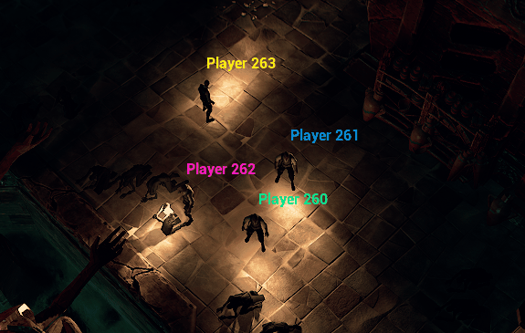

1. Architecture Réseau & Steam Subsystem

- Ré-implémentation du plugin Advanced Sessions via un GameInstanceSubsystem C++ dédié.
- Gestion modulaire de la création et recherche de parties via l'API Steam.
- Structure RPC optimisée pour la réplication des données.